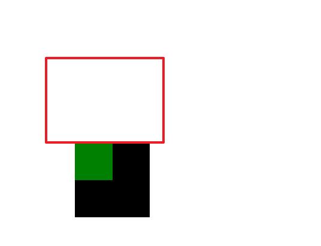
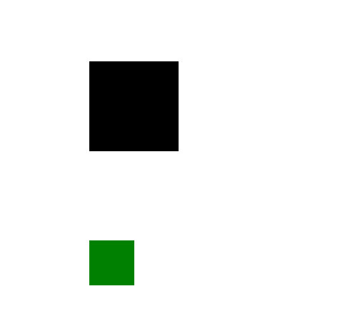
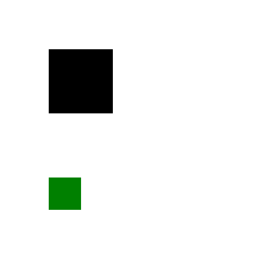
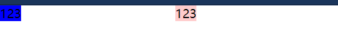
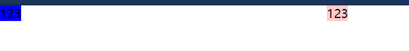
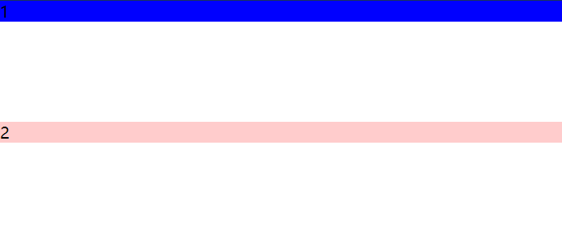

BFC
块格式化上下文（Block Formatting Context，BFC） 是Web页面的可视化CSS渲染的一部分，是块盒子的布局过程发生的区域，也是浮动元素与其他元素交互的区域。
下列方式会创建块格式化上下文：
- 根元素(
<html>)- 浮动元素（元素的
float不是none）- 绝对定位元素（元素的
position为absolute或fixed）- 行内块元素（元素的
display为inline-block）- 表格单元格（元素的
display为table-cell，HTML表格单元格默认为该值）- 表格标题（元素的
display为table-caption，HTML表格标题默认为该值）- 匿名表格单元格元素（元素的
display为table、table-row、table-row-group、table-header-group、table-footer-group（分别是HTML table、row、tbody、thead、tfoot的默认属性）或inline-table）overflow值不为visible的块元素display值为flow-root的元素contain值为layout、content或strict的元素- 弹性元素（
display为flex或inline-flex元素的直接子元素）- 网格元素（
display为grid或inline-grid元素的直接子元素）- 多列容器（元素的
column-count或column-width不为auto，包括column-count为1）column-span为all的元素始终会创建一个新的BFC，即使该元素没有包裹在一个多列容器中（ 标准变更 ，Chrome bug）。- 块格式化上下文包含创建它的元素内部的所有内容.
块格式化上下文对浮动定位（参见 float）与清除浮动（参见 clear）都很重要。浮动定位和清除浮动时只会应用于同一个BFC内的元素。浮动不会影响其它BFC中元素的布局，而清除浮动只能清除同一BFC中在它前面的元素的浮动。外边距折叠（Margin collapsing）也只会发生在属于同一BFC的块级元素之间。
触发BFC常用方式如下(部分情况也会使用上面内容):
1）position:absolute;
2）display:inline-block;
3）float:left/right; //浮动
4）overflow:hidden; //溢出盒子的部分要隐藏展示
具体使用见下方两个bug实例以及浮动模型
margin塌陷
形成塌陷
先来两个盒子
1 | <div class="wrapper"> |
1 | *{ |
这样的两个父子级盒子
给绿色的加个margin-left
1 | margin-left: 50px; |
移动没毛病
问题来了,把margin-left改成加margin-top
1 | margin-top: 50px; |
与最初的两个盒子时的状态没有任何差别,margin-top不管用
问题就是父子嵌套的盒子,子元素纵向使用margin不起作用
如果子元素的margin-top比父级margin的100px大
1 | margin-top: 200px; |

红框为后期添加(表示原来所在位置)
两个盒子同时移动了100px(200-100),带他父亲走,这么拽的么
这个效果就是margin塌陷,正常情况应该是父级相对于浏览器进行定位，子级应该相对于父级定位的,但是 margin 塌陷是在父级相对于浏览器进行定位时，子级没有相对于父级定位，就像父级顶上的棚子没有了一样,相当于棚塌陷了.

解决办法
既然棚塌陷了,那加一个呗
1 | border-top: 1px solid black; /*父级加上*/ |

仿佛解决了,但事实没那么简单
这个方法不能用,border-top多出来一像素,产品经理不同意
正确解法就是用BFC
上面介绍了BFC的形成,现在试一下(让父级拥有BFC)
1 | .wrapper{ |
出现这个其实是成功了…只是overflow:hidden;让溢出部分隐藏了
那换一个
1 | float:left; |

说明完全没问题,但我为什么要举overflow:hidden;这个例子?
答案是 这些方法都能触发 BFC，但是使用的时候都带来了新的麻烦,
在具体情况中，针对需求，哪个触发方式没有影响，就用哪个解决塌陷问题

margin合并
第七节盒子模型中有个margin隔开两个span的例子
1 | <span class="demo1">123</span> |
1 | *{ |

我给第一个span右边也加一个
1 | margin-right: 200px; |

margin造成的距离累加了
但和塌陷一样,问题也在纵轴方向
1 | <div class="demo1">1</div> |
1 | *{ |
都知道上面是什么样的,变化一下
1 | .demo1{ |

再给demo2变一下
1 | .demo1{ |
bug出现了,完全没变化
我们试着用BFC解决
1 | <div class="demo1">1</div> |
或者
1 | <div class="wrapper"> |
1 | .wrapper{ |
仿佛也是解决了,但并不然
上面这方法，改变了 HTML 的结构，这在开发中是不允许的,实际开发中，在 margin 合并这个 bug 上，不用 BFC（这里使用BFC会修改HTML）,假如我们需要两个 div 之间的距离有 300px，那就设置上面的 margin-bottom:300px;来解决距离的问题